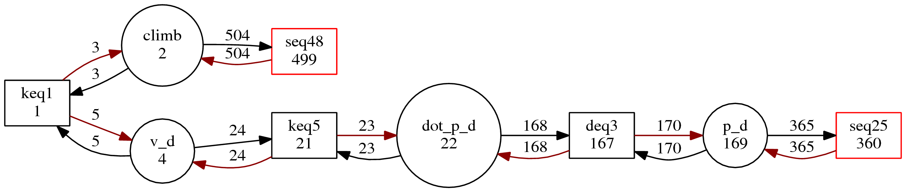
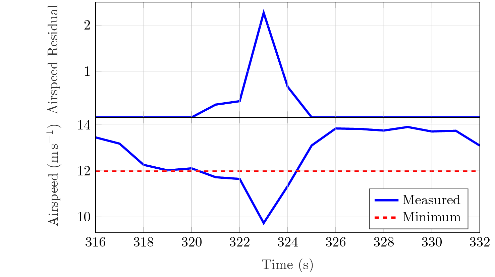

Residual Generation for a MAVLink UAV¶
This demo showcases the usage of fault-diagnosis to perform FDI in MAVLink-enabled fixed-wing UAVs.
We shall present step-by-step the procedure which involves:
- Generation of the Structural Model
- Extraction of PSOs for maximum fault isolation
- Finding valid matchings for each subgraph
- Implementation of every residual generator
- Calculation of the residuals using a stored log
Generation of the Structural Model¶
The MAVLink protocol is a standardized message format for use in unmanned vehicles. It is mostly intented for aerial vehicles, but is not limited to them. Its robust description allows for a fixed interface between such a vehcile and a generic FDI module.
Let us construct a structural graph which reflects a MAVLink-enabled fixed-wing UAV.
The corresponding model in the GraphPool folder is g033.
At the core of the model are the measurement equations:
msr = [...
% 0, HEARTBEAT
% 1, SYS_STATUS
{'fault msr load_sys_status load sub autopilot expr -load_sys_status/10+load'};...
{'fault msr voltage_battery_sys_status voltage_battery sub autopilot expr -voltage_battery_sys_status/1000+voltage_battery'};...
{'fault msr current_battery_sys_status current_battery sub autopilot expr -current_battery_sys_status/100+current_battery'};...
{'fault msr drop_rate_comm_sys_status drop_rate_comm sub autopilot expr -drop_rate_comm_sys_status/100+drop_rate_comm'};...
% 2, SYSTEM_TIME
% 24, GPS_RAW_INT
{'fault msr fix_type_gps_raw_int gps_fix_type sub sensors expr equal'};...
{'fault msr lat_gps_raw_int latitude sub sensors expr -lat_gps_raw_int/1e7+latitude'};...
{'fault msr lon_gps_raw_int longitude sub sensors expr -lon_gps_raw_int/1e7+longitude'};...
{'fault msr alt_gps_raw_int alt_msl sub sensors expr -alt_gps_raw_int/1000+alt_msl'};...
Each MAVLink message ID is stated. However, messages which convey state information (e.g. ID=0:Heartbeat) cannot be handled by our Parity-Space-based approach and are ommited. The same holds for event-triggered messages (e.g. any mission-related message).
The rest of the measurements are assigned a fault each and their analytical expressions are provided. Additionally, each measurement equation is assigned to a subsystem, for later classification.
If only the information conveyed through MAVLink was used, then only hardware redundancy cross-checking would be possible. Instead, we add a set of equations which hold for all fixed-wing UAVs and act as the “glue” among the measurements.
These equations can act as:
- First-principles models
- Limit-checking
- Implicit equalities
Naturally, since these equations are meant to be portable from UAV to UAV, they shouldn’t need any airframe-specific parameters.
% First-principles equations
kin = [...
{'climb v_d expr -climb-v_d'};...
{'v_ground ni v_n ni v_e expr -v_ground+sqrt(v_n^2+v_e^2)'};...
{'dot_p_n v_n expr equal'};...
{'dot_p_e v_e expr equal'};...
{'dot_p_d v_d expr equal'};...
{'v_w_n ni dir_wind ni v_wind_hor expr -v_w_n+v_wind_hor*cos(dir_wind)'};...
{'v_w_e ni dir_wind ni v_wind_hor expr -v_w_e+v_wind_hor*sin(dir_wind)'};...
{'ni cog ni v_e ni v_n expr -tan(cog)+v_e/v_n'};...
{'v_air press_diff par rho expr -press_diff+0.5*rho*v_air*v_air'};...
{'v_air ni v_ground ni v_wind_hor ni cog ni dir_wind expr -v_air+sqrt(v_ground^2+v_wind_hor^2-2*v_ground*v_wind_hor*cos(dir_wind-cog))'};...
% Limits on variables
lim = [...
{'ni load par load_max expr max(load-load_max,0)'};...
[...]
{'ni satellites par satellites_min expr max(satellites_min-satellites,0)'};...
{'ni alt_agl par alt_agl_min expr max(alt_agl_min-alt_agl,0)'};...
{'ni vcc par vcc_min par vcc_max expr max(max(vcc_min-vcc,0),max(vcc-vcc_max,0))'};...
{'ni v_servo par v_servo_min par v_servo_max expr max(max(v_servo_min-v_servo,0),max(v_servo-v_servo_max,0))'};...
{'ni freemem par freemem_min expr max(freemem_min-freemem,0)'};...
{'ni ratio_v_air par ratio_v_air_min par ratio_v_air_max expr max(max(ratio_v_air_min-ratio_v_air,0),max(ratio_v_air-ratio_v_air_max,0))'};...
[...]
{'ni temperature par temperature_min par temperature_max expr max(max(temperature_min-temperature,0),max(temperature-temperature_max,0))'};...
{'ni v_air par v_air_min expr max(v_air_min-v_air,0)'};...
{'ni error_v_air par error_v_air_min par error_v_air_max expr max(max(error_v_air_min-error_v_air,0),max(error_v_air-error_v_air_max,0))'};...
];
Extraction of PSOs for maximum fault isolation¶
The structural_analysis() routine bears the majority of the Structural Analysis work. After instantiating the initial structural graph object, it finds its overconstrained part, to limit the scope of the ensuing analysis.
The next important step is to break down the structural graph into its Weakly Connected Components (WCCs). If such a partitioning exists, it can greatly accelerate the analysis. Indicatively, the initial MAVLink model is of large size and also has a large structural redundancy degree of 59. It potentially could contain up to 9.4x10e21 residual generators, a number which is intractable.
Instead, the initial model can be broken down to 34 subgraphs, which can yield up to 7952 residual generators, a much more amenable number.
graphs_conn = getDisconnected(graphRemaining); % Get the Weakly Connected Components
A typical structural subgraph looks like

The MTES [1] algorithm is used to extract all the minimum structurally overdetermined sets of equations.
sg.buildMTESs(); % Use the LiUSM algorithm to find the MTESs
ResGenSets = sg.getMTESs(); % Get the equations sets corresponding to the MTESs
Then, a new structural graph is generated for each MTES, in order to be examined separately.
SOSubgraphs(i) = sg.buildSubgraph(ResGenSets{i}, 'pruneKnown', true, 'postfix', postfix);
One of the PSOs extracted from the previous subgraph is
Known input variables are ommited without loss of generality.
Finding valid matchings for each subgraph¶
Next, a matching procedure is applied to each Proper Structurally Overconstrained subgraph (PSO). The goal is to take advantage of the graph-based encoding of each PSO and employ graph-based methods to discover a matching which represents a valid sequence of calculations leading to the evaluation of a residual generator.
Older matching algorithms, such as the Ranking Matching [2] and the efficient Hungarian algorithm and its derivatives [3], are not a suitable option for this task. They have multiple deficiencies, such as the inability to cope with calculation loops or ensuring the realisability [4] of the resulting matching.
For the above reasons, we employ our own Branch and Bound Integer Linear Programming (BBILP) matching algorithm.
[...]
disp('Examining another SO graph')
tempGI = SOSubgraphs(index);
matchers(i) = Matcher(tempGI); % Instantiate the matcher for this SO
[...]
matching = matchers(i).match('BBILP','branchMethod',branchMethod);
If there exists one, the valid matching is used to fully direct the PSO, embedding the residual calculation order.
The matched and directed PSO from the previous section is presented below:

The white rectangle to the right represents an unmatched equation which will serve as a residual generator.
We can perform Isolability Analysis in this stage. We gather all the structural residuals, note which faults are introduced in which residuals and generate the Fault Signature Matrix.

As we can see, its structure is mostly diagonal, meaning that all faults are (structurally) isolable, with a single-fault assumption. The non-singular diagnoal elements represent blocks of faults which are not distinguishable from each other, due to lack of surplus information.
Only 6 faults are non-detectable.
Implementation of every residual generator¶
We can now proceed with implementing each structural residual generator and obtain a numerical function, able to process measured data.
The analytical expression of each equation was passed during the construction of the model and stored alongside the equation. Now, the Symbolic Toolbox of MATLAB is employed to solve each equation for the specified variable (according to the matching) and use the rest of the equations as arguments.
The function get_res_gens is responsible for this task:
RG_results = get_res_gens(SA_results, RG_settings);
The edges of the matching are converted to a fully-ordered evaluation list, through knowledge propagation from inputs to the residual generator equation.
%% Propagate knowledge from inputs to outputs
knownVarIds = [];
unusedIndices = 1:length(SCCsEquIds); % Indices to the equations SCCs cell array
% Build an active list of equations which are ready to be solved
activeList = []; % This contains indices to SCCsEquIds
for i=unusedIndices
unknownVariables = setdiff(SCCsVarIds{i},knownVarIds);
if isequal(sort(unknownVariables),sort(SCCsMatchedVarIds{i}))
activeList(end+1) = i;
end
end
solutionOrder = {};
while ~isempty(activeList)
unusedIndices = setdiff(unusedIndices, activeList); % Do not look in equations already in the list
% Pop an item
currentIndex = activeList(1);
solutionOrder(end+1) = SCCsEquIds(currentIndex);
activeList(1) = [];
% Update the known variables list
knownVarIds = [knownVarIds SCCsMatchedVarIds{currentIndex}];
% Search for new solvable equations to populate the list
for i=unusedIndices
unknownVariables = setdiff(SCCsVarIds{i},knownVarIds);
if isempty(unknownVariables) % This SCC can be solved
activeList(end+1) = i;
end
if isequal(sort(unknownVariables),sort(SCCsMatchedVarIds{i})) % This SCC has unknown variables but it will match all of them
activeList(end+1) = i;
end
end
end
NOTE: Any Strongly Connected Components (SCCs) existing in the matched subgraph will break the propagation process. Thus, during propagation they are compacted into single equation-variable pairs to allow the process to continue. Later, they each will be treated as a unified equation system during the implementation process, anyway.
Each equation is turned into an Evaluator object
obj.evaluators_list = create_evaluators(graphInitial, matched_graph, SCCs, values, obj.dt);
[...]
new_evaluator = Evaluator(gi, sub_digraph, scc, dictionary);
which may be inherited by
new_evaluator = Differentiator(gi, sub_digraph, scc, dictionary, dt);
new_evaluator = DAESolver(gi, sub_digraph, scc, dictionary, dt);
depending on the nature of each equation; whether it is a single equation, an explicit integration/differentiation or an SCC representing a Differential-Algebraic Equation set (DAE).
The equation is solved symbolically once during setup and a numerical function is created. In this manner each subsequent evaluation (e.g. during log parsing) will be as fast as possible.
obj.expressions_solved = vpasolve(obj.expressions, obj.sym_var_matched_array); % Store the pre-solved expressions
[...]
obj.expressions_solved_handle = matlabFunction(obj.expressions_solved, 'Vars', obj.sym_var_input_array, 'Outputs', obj.gi.getAliasById(obj.var_matched_ids));
108 residual generator functions were created in this fashion.
Calculation of the residuals using a stored log¶
We have reached a point where we are able to pass a MAVLink log to our algorithm to perform fault diagnosis in real measured data. Our example log file was taken during a mapping mission, performed by a 2m UAV. The UAV experienced sudden loss of control and fell into the ground.

The log is initially converted to an .m file with the mavtomfile.py Python script, provided by pymavlink.
Then, the log file is resampled at a constant rate, which is user selectable. Most MAVLink messages are emitted regularly at 1, 2 and 4Hz. We select 1Hz for our analysis. We can also restrict the examination interval to the last few seconds of the flight.
data_resampled = resampleData('afrika.mat', SA_results); % Read the dataset and resample it to have uniform data
Now the data is in a form that can be fed into each residual generator and obtain residual signals. Thresholding is also performed against a constant value (different for each residual).
RE_results = evaluateResiduals(SA_results, RG_results, data_resampled); % Evaluate the residual generator bank
[...]
interval_of_interest = [317:333]; % Select the sample interval you wish to investigate
triggering_threshold = 0.97; % Specify a static threshold
% Threshold the residual signals
triggered_residuals = thresholdResiduals(RE_results, interval_of_interest, triggering_threshold);
The result is a binary residual trigger signal, at the resolution of 1 second. One such signal is generated for each residual generator.
We do not make the single-fault assumption, because in tightly-coupled systems, such as a UAV, one fault can easily cause inconsistencies to other neighbouring subsystems. Still, the known fault signatures can be used to exclude which faults are certain to not have happened (using the exoneration assumption).
This information lets us construct the Fault Occurrence Grid. This visualization pattern is a powerful investigation tool, which can help the human investigator have a better picture of the manifested faults and make time correlations.

Loss of control occurred at t = 322 seconds. Even before the failure time, we notice a few faults triggering certain residuals. Faults corresponding to 24/lon, 30/yawspeed, 33/lon, 116/zgyro, 182/lat and 182/lng are probably caused by inconsistencies between the direct measurements of the sensors related to the navigation system and the 3 different navigation algorithms which ArduPilot runs simultaneously.
More concerning is the departure from the airspeed envelope and the airspeed error, occurring at time t = 321 seconds - 325 seconds, as witnessed by the faults 62/airspeed_error and 74/airspeed. Plotting the actual airspeed data series we see a significant drop in airspeed at that interval.
At the same interval we see residuals related to 3 state control faults trigger. These faults refer to altitude, pitch and roll regulation. In fact, these faults affect only one residual each and are hence isolable. Indeed, plotting the roll, pitch and altitude time series, we clearly see that the aircraft has by now entered a downward spiral, leading to the crash. Even though the airspeed recovered a few seconds after the initial stall, the autopilot was not able (nor programmed) to perform the maneuver required to exit the spiral.

It is interesting to note that a lot of residuals related to faults of the sensor and navigation subsystems triggered during the downward spiral. This can be attributed to the separate state estimation filters underperforming because of the rapid rotation and producing diverging estimates.
Regarding the root cause of the accident, we can safely rule out airspeed estimation, since the related residuals did not trigger. Instead, the first severe failure was the inability of the autopilot to maintain the airspeed error within a +-3m/s bound. This allowed the airspeed to drop below its prescribed envelope, resulting in a tip-stall. Past that point, the autopilot was no longer able to control the state of the aircraft.
The inability of the autopilot to regulate airspeed should probably not be attributed to an external fault. Instead, it is much more likely that the kinetic energy control loop was badly tuned, especially taking into account the high Mean-Sea-Level altitude the aircraft was flying at. However, further investigation would require analysis of the internal structural of the controller architecture and implementation, and such information is not conveyed by the MAVLink stream.
References
| [1] |
|
| [2] |
|
| [3] |
|
| [4] |
|